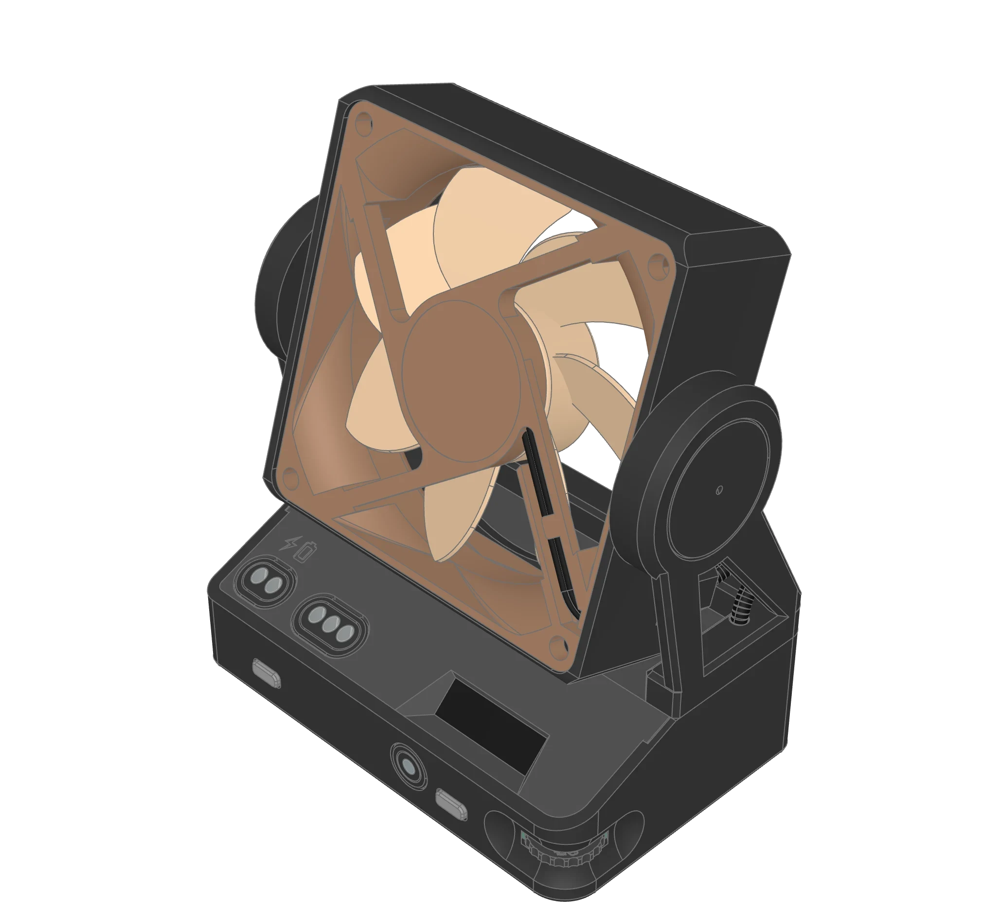

............
4
▾Tools
▸Station
Wheel stepmm
N=(-1.00, 0.00, 0.00)
N=(0.00, -1.00, 0.00)
N=(0.00, 0.00, -1.00)
Intersection
Planes
Use object color caps
Ambient Light
Direct Light
Metalness
Roughness
Control material for CAD view, values in %
Stripe Count
Stripe Opacity
Direction
Environment
Use 4K maps
Env Intensity
Env Rotation
Background
Tone Mapping
Exposure
Shadow Intensity
Shadow Softness
AO Intensity
Texture Mapping
▾Info
[0] | Ready
|
1
queuedSplit the top lid into two flat-printable parts, joined with M3 pan-head screws in heat-set inserts
The current lid has a lip sloped at 45 degrees. With poor filament or a weak printer this sloped part comes out badly. So:
- Split the lid along the joint line where the lip is into two separate parts: a lower part and an upper part. Both parts should print flat, lying horizontally, without supports, as far as possible. No 45-degree sloped surface should remain at the joint.
- Each part should be mountable on its own (each seats and is fixed in place separately).
- Join the two parts with M3 screws:
- Screw type: M3 pan head (domed flat head) Phillips machine screw, fully threaded, stainless steel.
- Screw length: not final yet; the user will measure it and say. Until then keep the screw length as a parameter, and let the pocket depths follow it.
- The screw head must not stand above the flat lid, or at least must not spoil its flatness. Cut a flat counterbore for the screw head in the upper part. The head should sit flush with the surface or slightly below it. Do not use a countersink (conical seat); a pan head does not sit in a cone.
- A screw clearance hole in the upper part (about 3.4 mm), an M3 heat-set insert pocket in the lower part.
- Heat-set insert:
- Insert length 5 mm, size M3.
- Work out the pocket diameter and depth with the right tolerance for a 5 mm M3 heat-set insert. Make the pocket slightly deeper than 5 mm so the tip of the insert does not come out of the outer surface.
- The screw length should suit the insert and the upper part's thickness. The screw tip must not hit the bottom of the insert.
- Do not change the rest of the current design's dimensions or look. Only the split, the flatness, the counterbore and the screw joint are added.
lid split / side screws 0%
2026-10-11 16:02 · by Deniz · iot-fan/parts/lid
approximate (time window)
tokens 119.84Mcalls626cost ₺10,518+out/s7.79time3h 29mcontext182.2kthinking12.3kvendors3
output tokens/s peak 171/s
claude-opus-5-591.2k₺9,668
claude-haiku-5-54.2k₺0
Qwen/Qwen3.8-Flash1.4k₺0
claude-sonnet-5-5888₺850.14
agent 614 calls₺10,518
taste 1 call₺0
reading 6 calls₺0
translation 1 call₺0
ai summary 3 calls₺0
chat 1 call₺0
design 94% ₺9,877
replies 5% ₺575.10
builds 1% ₺66.31
jobs 46ram 2.4 GBcpu 3.7 core-hgpu —energy ~29 Whbox 12.7 core-h · 28.9%
⊢⊣10.0
Distance
Material Editor
Properties
Shape
A
Z
| Mouse Navigation | |
| Rotate | <left mouse button> |
| Rotate up / down | <ctrl> + <left mouse button> |
| Rotate left / right | <meta> + <left mouse button> |
| Pan | <shift> + <left mouse button> or <right mouse button> |
| Zoom | <mouse wheel> or <middle mouse button> |
| Mouse Selection | |
| Pick element | <left mouse button> double click |
| Click on navigation tree label | |
| (Shows axis-aligned bounding box, AABB) | |
| Isolate element | <shift> + <left mouse button> double click |
| <shift> + click on navigation tree label (nested) | |
| Hide element | <meta> + <left mouse button> double click object |
| <meta> + <left mouse button> click tree label (nested) | |
| Hide other elements | <shift> + <meta> + <left mouse button> click tree label (nested) |
| Set camera target | <shift> + <meta> + <left mouse button> double click |
| CAD Object Tree | |
| Collapse single leafs | Button '1' (all nodes with one leaf only) |
| Expand root only | Button 'R' |
| Collapse all nodes | Button 'C' |
| Expand all nodes | Button 'E' |
| Measure Mode | |
| Select 1. (and 2.) object | <left mouse button> |
| Use center instead of min distance | <shift> + <left mouse button> for the second selection |
| Filter object types | Type menu or <n>one, <s>olid, <f>ace, <e>dge , <v>ertices |
| Unselect last object | <right mouse button> |
| Unselect all objects | <ESC> |
All▾
All
Vertex
Edge
Face
Solid

Motion
Tilt-18.0°
Fan60 rpm
Bends with the motion, drawn live: Cable
120 lines running…

v20broke
Broke when Lid v41 changed:
iot-fan/assemblies/base failed to build after this change
uses
Base.3d
Case base.3d
Enclosure.3d
Fan Frame.3d
Fan Module.3d
Module Dock.3d
used by
nothing
copied numbers
line 120: 0.6 is enclosure.WIN_R